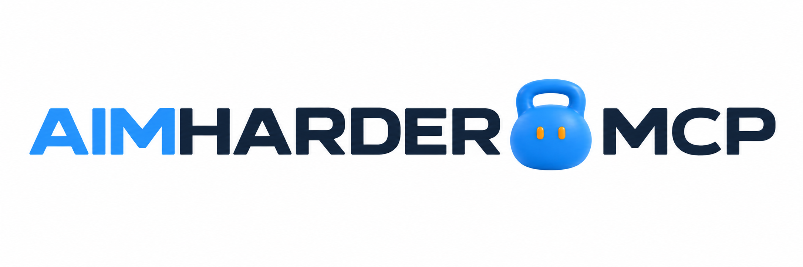

Wordmark composition.
Historical font comparison. Krona One is now selected; continue with the Connect naming study.
AIMHARDER MCP
MCP Krona One · Regular 400Blue AIM / navy HARDER & MCP / circular face
Static by default. Motion starts only when requested.
Compare at the same cap height Font shapes are not stretched or redrawn.
Small horizontal use Same selected typeface and neutral character.
AIMHARDERMCP Earlier generated direction Lettering reference, not an exact font specimen.

This preserves the wide, low direction you liked. Its earlier symbol predates the circular face; the current composition above uses the chosen character.